The feel
Dieselpunk fills the gap between steampunk and cyberpunk with alternate histories set in the years between the two World Wars.1 Lewis Pollak, to whom the word is credited, called it "the darker, dirtier side of steampunk".1,2 Its look leans on Art Deco above all, and Fritz Lang's Metropolis is the mother lode of its imagery.1 Picture Deco's shine stained with petrol and dirt: the grease and machine oil of the age under the glamour of the Roaring Twenties.3
Art Deco was made to symbolise wealth and sophistication,4 and dieselpunk keeps that confidence while admitting what it rests on: its societies know their wealth depends on the machine, and that their calm is an illusion they built for themselves.3 BioShock's designers found that horror is more powerful next to beauty than in a dark cellar, so they took "all the best bits of art deco and made it very sinister".5
- monumental
- gilded
- oily
- symmetrical
- smoke-filled
- sure of itself
Where it comes from
Art Deco takes its name from the Exposition Internationale des Arts Décoratifs et Industriels Modernes, held in Paris in 1925, and the Chrysler and Empire State buildings are among its most monumental works.4 New York's 1916 zoning law made towers step back as they rose, and Hugh Ferriss's drawings of those masses, collected in The Metropolis of Tomorrow (1929), shaped the Deco skyscraper.6 Fritz Lang's Metropolis (1927) turned the skyscraper city into a grim future, with its workers living and toiling under the city.7 The word dieselpunk is credited to the designer Lewis Pollak, who used it in 2001 for his fantasy role-playing game Children of the Sun.1,2,3 Batman: The Animated Series (1992) called its noir Gotham "Dark Deco",8 and BioShock (2007) put an Art Deco city on the sea floor, its look restarted from New York's Chrysler and Empire State buildings.3,9
Core elements
Stepped setback towers
New York's 1916 law let a building climb only to a height set by the width of the street before it had to slope or stairstep back, while a tower on no more than a quarter of the lot could go to any height.6 Rapture's skyscrapers mostly end in points and stepped crowns, with geometric ornament.3
Geometric machine-age ornament
Ornament is geometric or stylised, and sun rays are among its favourite motifs.4 The style admired machine-made things for their simplicity, flat planes, symmetry and unvaried repetition,4 and its straight lines run mostly in zigzags.3
Tarnished luxury materials
Deco used varied and often expensive materials,4 such as aluminium, chrome, bronze, lacquer, tortoiseshell and ebony.3 Dieselpunk dims them: petrol dulls the shine, and the chrome and bronze crack.3
Heavy interwar machinery
Machines are early and crude. Jakub Rozalski's walkers are "not futuristic machines" but resemble the first tank designs of the First World War: clumsy, heavy, unreliable, and a horror to people not yet used to them.10 Rapture's power plant is all gears, pipes, fuel tanks, steam vents and turbines.3
Low-key noir lighting
The light comes from film noir: low-key, picking out only the main figures and actions in hard contrast with deep, rich shadows, and mostly at night.3 Batman: The Animated Series made those heavy shadows its official hue and called its mix of noir and Art Deco "Dark Deco".8
Heroic monuments and murals
Ferriss drew the last of his zoning studies as a pyramid "sculpted in three dimensions", lit from behind by radiating beams of light.6 Streamline-era murals and reliefs show vigorous, bare-chested men mastering the machine.3
How to do it
Mass towers by the 1916 rules
Build straight up to a height tied to the width of the street, step back above it, and keep the tower to a quarter of the lot.6 Ferriss's own studies square the slopes into setbacks every two floors and end on a central tower of about 70 storeys between wings about half its height.6
Draw on a black ground
Ferriss blocked out forms and deep shadows in greasy crayon for the densest blacks, pulled tone off with a paper stump, then erased to bring out the highlights.6 Batman: The Animated Series painted on black paper so it could stay dark and still keep its colours vibrant.8 Eric Radomski's first study for it, in coloured pencil on black paper, showed city lights reflected on wet pavement.11
Light figures from the back and side
Light the figures from behind and the side as you shoot them: Sky Captain's cinematographer, Eric Adkins, warns that you cannot recreate the feel of back- and sidelight in post from a flat-lit image.12 His crew kept the key lights on one side of the actors and imagined every tree or building shadow the finished frame would add.12
Grade in black and white first
Sky Captain used the black-and-white composite as the master image and laid colour over it afterwards, drawing on two- and three-strip Technicolor.12 Its references included the noir classic The Third Man and the films of F. W. Murnau.12
Build machines from boxes
Nate Wells designed System Shock 2's maintenance robot as mostly boxes, since curves and thin antennas would be cut from the model anyway, and working within the limits gave a better unwrap and more texture space.13 BioShock's Big Daddy grew out of it, at 2,500 to 3,000 polygons, with the shoulders at eye level for a "dumpy, kind of sad look".13
Set up metal and paint materials
In a physically based material, give bare metal such as brass or gold a metallic value of 1 and painted areas 0, split by a black-and-white mask, because paint sits on top of metal instead of blending with it.14 Only corroded, dusty or rusty metal needs values in between, and scuffs and smudges belong in the roughness map.14 A measured base colour for gold is 1.000, 0.766, 0.336.14
Design the signs and lettering
Rapture's shop signs pair Deco geometry and lettering with brass, bronze, gold trim dulled by the sea, and neon.3 For type, a high-contrast geometric Deco sans such as Limelight suggests the 1920s, the theatre and Hollywood, and works best at medium and large sizes.15
Cheat sheet
- Massing
- Setbacks above a street-width base, tower on a quarter of the lot6
- Ornament
- Geometric, sun rays, symmetry, repetition4
- Materials
- Chrome, bronze, lacquer, ebony, dulled by petrol3
- Light
- Back- and sidelight, keys on one side12
- Grade
- Black-and-white master, colour laid over it12
- Metals
- Metallic 1, gold base colour 1.000, 0.766, 0.33614
Do
- Put the horror next to the beauty. BioShock's designers found that something horrifying loses power in a dark, sinister place but becomes very unsettling next to something beautiful.5
- Get one room right first. BioShock's Art Deco look grew from a single restaurant room the team liked and kept building on.9
- Carry the style into small props. Rapture's railings, metro timetables, lifts and doors are all Deco, even where they make no difference to play.3
- Keep the adverts perfect while the city rots. In Rapture the posters, vending machines and neon signs stay in mint condition, so the dark city is lit by its own advertising.3
Avoid
- Victorian steam. Steampunk normally uses the Victorian or Edwardian years and runs on steam; dieselpunk moves the clock forward to the interwar period, when the machines ran on petrol.2,3
- Clean chrome everywhere. Push Deco's shine to the extreme and you get decopunk, the "sleek, shiny" version where "everything is chrome"; dieselpunk is the gritty one.3
- Space-age rockets and Cold War futures. That is atompunk, which draws on the future imagined during the Cold War and the Space Age.3
- Glamorising the regimes. In dieselpunk's dark branch, society gives in to totalitarianism and the slavery of the machine, and the Nazis are usually the villains.3,16
Tools and tutorials
- Metropolis, full film
Free at the Internet Archive. Watch the first five minutes with the sound off.
- Art Deco Society of New York
Photographs and walking tours of the real buildings.
- Jakub Rozalski
His site gathers the 1920+ paintings.
- Limelight
A free high-contrast Deco display face, used on this page.15
- Poiret One
A free, light geometric face. Use it large.
- Physically Based Materials
Metallic, roughness and measured base colours for common metals.
Palette
Sampled from the Metropolis poster, Rapture, the Normandie poster and Rozalski's 1920+ paintings. Press a tower to copy its colour.
Feel the vibe
Listen
Mournful strings. Study how sadness, not menace, sets up the city.
YouTubeOn BioShock's track list.17 Study how a cheerful song plays against a ruined city.
YouTubePlay it under the machine-hall scenes and study how the orchestra drives them.
YouTubeBig-band swing for the penthouse. Grim Fandango's score draws on this Ellington-era big band.18
YouTubeMcConnell fused Mexican folk music with Ellington-era big band and noir film scoring.18
YouTubeAlso on BioShock's track list.17 Listen to the lyric: it is about who has money and who does not.
YouTube
More references
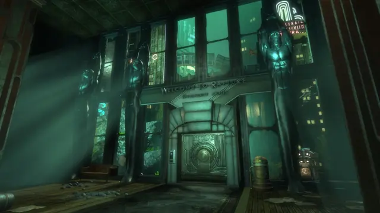
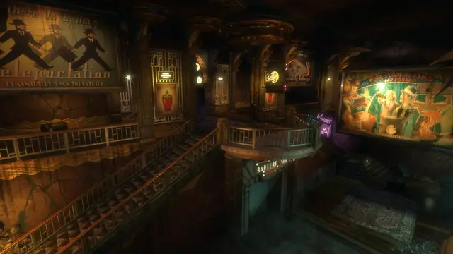
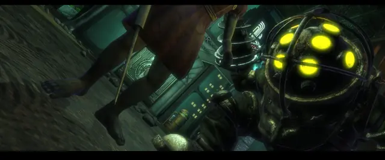
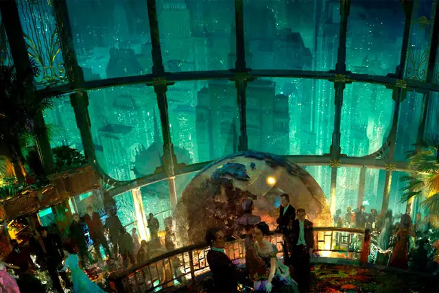
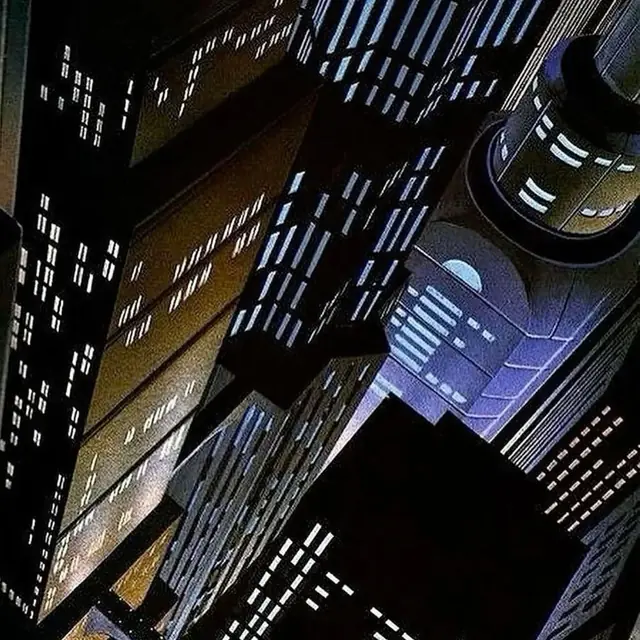
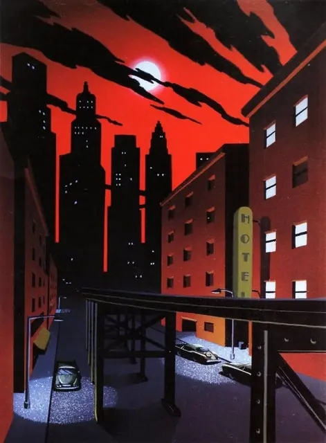
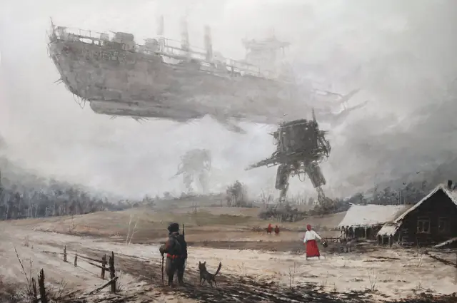
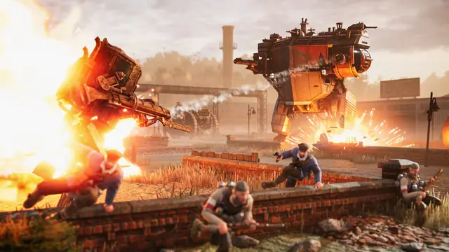
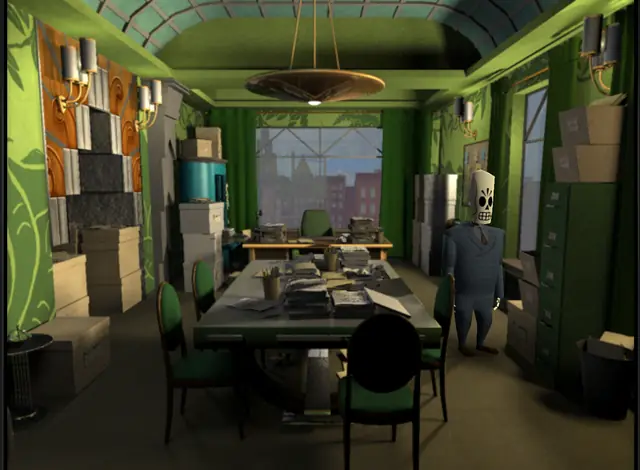
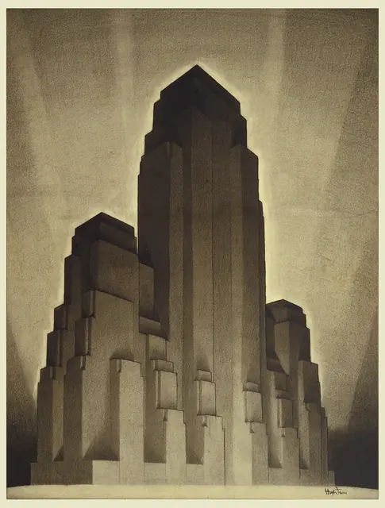
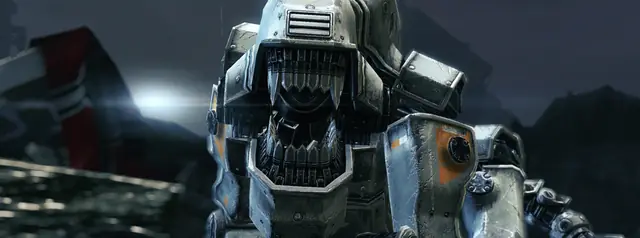
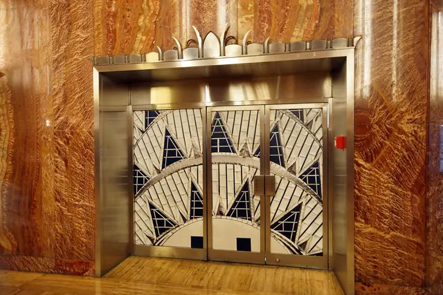
Games
- BioShock
An Art Deco city on the sea floor, once gleaming and now dark and ruined.3 Study its signs, posters and vending machines.
- Iron Harvest
Set in Jakub Rozalski's 1920+ world, under licence.10 Study the walkers.
- Grim Fandango
Film noir and Mexican folklore in a land of the dead.18 Study the rooms.
- Wolfenstein: The New Order
Study its monumental concrete and giant war machines.
- Crimson Skies
Study its aircraft: the aeroplane may be the most quintessential dieselpunk machine.16
Film, art and more
- Metropolis
The mother lode of dieselpunk imagery.1 Every frame is a lesson in scale.
- Batman: The Animated Series
The creators' Dark Deco, painted on black paper.8
- Hugh Ferriss
The Metropolis of Tomorrow (1929) collects his towers in light and shade.6
- A. M. Cassandre
Study how his ship and train posters reduce machines to geometry.
- Chrysler Building
Its sunburst-patterned steel spire is often cited as the epitome of the Deco skyscraper.4 Study the crown and the lobby.
- Sky Captain and the World of Tomorrow
Shot against bluescreen, with a black-and-white composite as the master image and colour laid over it.12
- Tamara de Lempicka
Study her portraits for how to paint people in this style.
- Scythe
A board game set in an alternate-history 1920s, in Rozalski's 1920+ world.19
Sources
- 1Dieselpunk
- 2dieselpunk n. 1
- 3Dieselpunk: una distopía en Art Decó
- 4Art Deco
- 5BioShock: designer interview
- 6The New Architecture
- 7Metropolis
- 8Batman: The Animated Series (1992)
- 9Interview: BioShock's Ken Levine
- 10Games have always accompanied me: an interview with artist Jakub Różalski
- 11No Boundaries: An Interview With Eric Radomski
- 12Sky Captain and the World of Tomorrow (page 3)
- 13The iconic look of BioShock's Big Daddy has its roots in System Shock 2's low polygon counts
- 14Physically Based Materials
- 15Limelight
- 16Decodence
- 17BioShock music list posted by Major Nelson
- 18When Mexican folk music danced with film noir: FACT meets Peter McConnell, the composer behind Grim Fandango
- 19Scythe